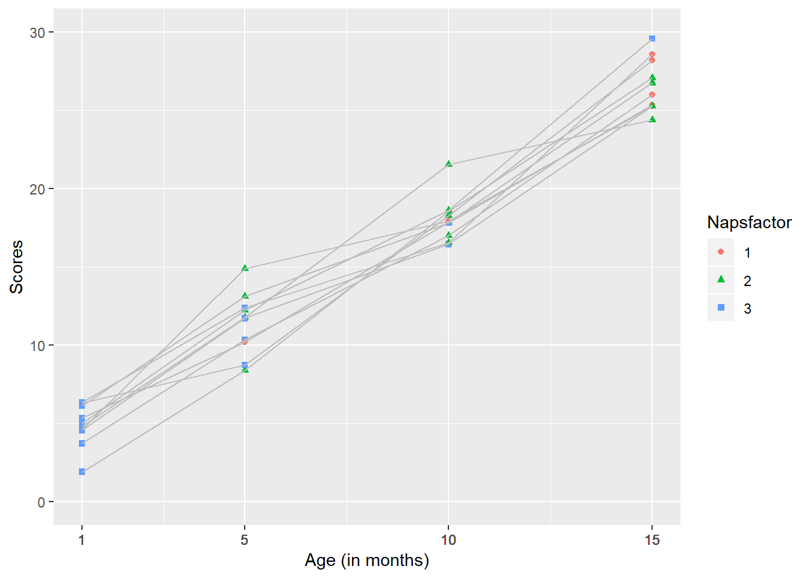

It let’s you specify variance-covariance structures for the residuals. It is well suited for repeated measure or longitudinal designs.
One similar package is lme4. It allows you to fit outcomes whose distribution is not Gaussian and allows for crossed random effects. It stores data more effiently due to the use of sparse matrices. It is more suited for clustered data sets.
nlme includes sample data, statistics, matrices, and a lattice framework.
Found on the CRAN repository
Website: https://svn.r-project.org/R-packages/trunk/nlme
install.packages("nlme")library(ggplot2)
library(nlme)This generic function fits a linear mixed-effects model in the formulation described in Laird and Ware (1982) but allowing for nested random effects. The within-group errors are allowed to be correlated and/or have unequal variances.
Need repeated measures from a single subject The data may be longitudinal, but they also may not.
Can account for correlations within individuals within the random effects
Uses maximum likelihood estimates
lme(model, data, fixed, random, groups, start, correlation, weights, subset, method, na.action, naPattern, control, verbose)
#creating a data set
Subs <- rep(c(seq(1:10)), 4)
Month <- c(rep(c(1), 10), rep(c(5), 10), rep(c(10), 10), rep(c(15), 10))
Naps <- c(rep(c(3), 10), 2, 3, 2, 1, 2, 3, 2, 3, 2, 3, 2, 2, 2 ,2, 3, 3, 2, 2, 1, 2, 3, 1, 2, 2, 1, 1, 2, 1, 2, 1 )
Naps <- as.factor(Naps)
scores <- c(runif(10, 1, 15), runif(10, 5, 20), runif(10, 10, 25), runif(10, 15, 30))
dataset <- data.frame(Subs, Month, Naps, scores)#Conditional growth model
tutorial<-lme(scores ~ Month * Naps, random = ~ Month | Subs, data=dataset)lme(model, random, data)
model - scores ~ Month * Naps
We expect scores will be influenced by how old infants are (Month) and the number of Naps they take per day. There may be an interaction between these predictors.
random - random = ~ Month | Subs
Random error comes from the fact that this is a within subjects design. The same infants are assessed at 1 month, 5 months, 10 months, and 15 months.
data - data=dataset
Using the data set we created previously.
#summarize an lme object - our solution
tut<- summary(tutorial)
tabl = tut$tTable
tabl ## Value Std.Error DF t-value p-value
## (Intercept) 4.5581755 5.8197476 25 0.7832256 0.44085175
## Month 1.1727985 0.4399407 25 2.6658107 0.01326523
## Naps2 5.8454034 6.5415686 25 0.8935782 0.38006944
## Naps3 2.9249381 5.9819197 25 0.4889631 0.62913010
## Month:Naps2 -0.5271529 0.5286370 25 -0.9971925 0.32822570
## Month:Naps3 -0.4994257 0.5037190 25 -0.9914768 0.33095272From this analysis, we would conclude that there is a main effect of age, infants performance improved with age, but there is no effect of number of naps. It was trending in the correct direction as the only negative slope.
plot<-
ggplot2::ggplot(dataset, aes(x=Month, y=scores, color=Naps, shape = Naps), xlim(1, 15), ylim(0, 25), xlab(Month) ) +
geom_point()+
geom_line(group=Subs, color="grey")
plot + scale_x_continuous(name="Age (in months)", limits=c(1, 15), breaks = Month) +
scale_y_continuous(name="Scores", limits=c(0, 30))
This kind of graph makes it more clear that there are 2 developmental trends occuring here- Infants’ performance on the assessment is improving with time and the average number of naps they take is decreasing with time.
Curran, P. J., Obeidat, K., & Losardo, D. (2010). Twelve Frequently Asked Questions About Growth Curve Modeling. Journal of cognition and development : official journal of the Cognitive Development Society, 11(2), 121–136. doi:10.1080/15248371003699969
Maindonald, J. (2007). Chapter 10: Multi-level models and repeated measures. In J. Maindonald & J. Braun (Eds.), Data analysis and graphics using R: An example-based approach. Cambridge: Cambridge University Press.